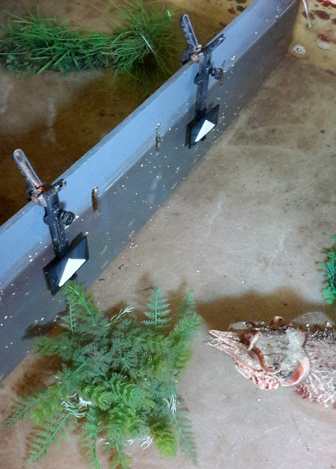
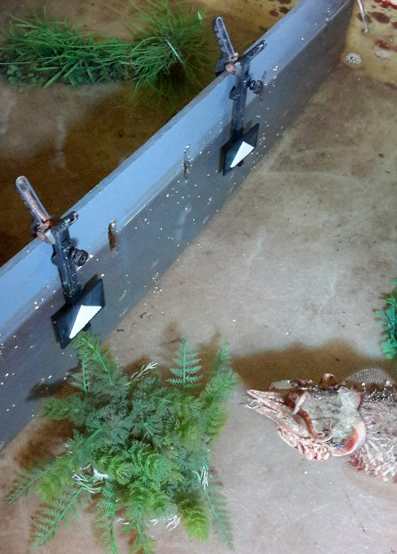
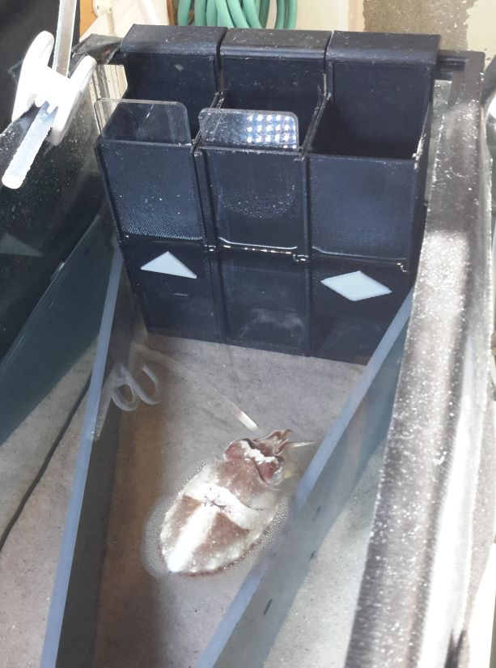
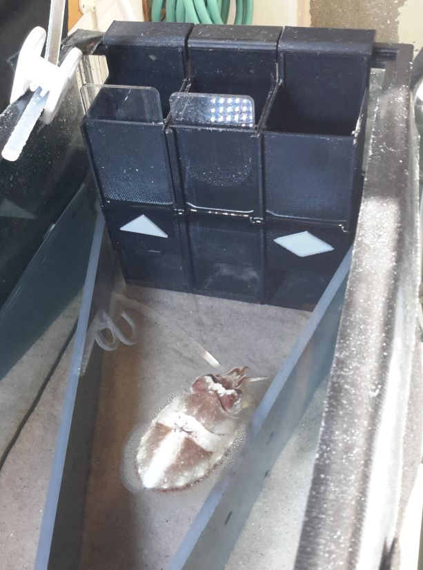

Designs for Cephalopod
Operations at the Marine Biological Laboratory.

Design of
Embryo Incubator for Cephalopod Operations at the Marine Biological
Laboratory.


Signs and holders used in Alex
Schnell's studies on Complex
Cognition in the Common Cuttlefish at MBL.
 

 

Fabrication of molds for forming wells in agarose for cell research
for Amy Herbert, Grass Fellow at MBL.